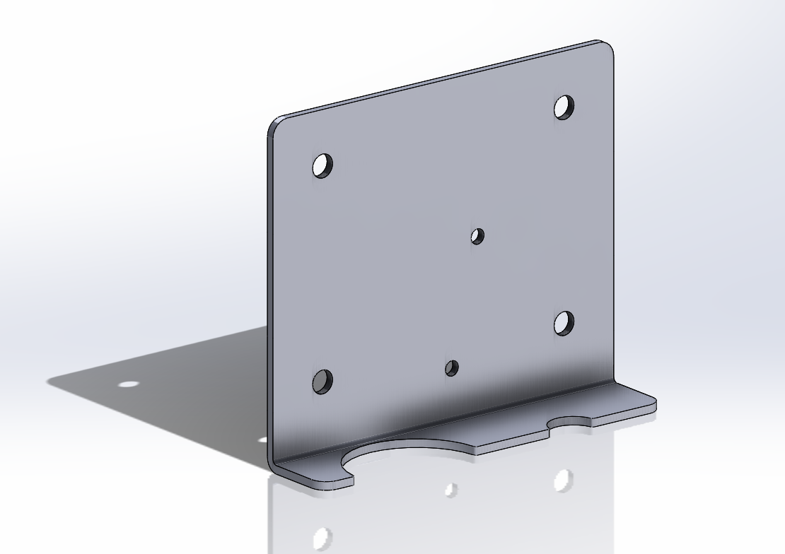

Today I got inspired to work on my projects again. It's thanksgiving long weekend, so I've got ample time right now. I've been feeling a tad socially disconnected lately, and so I really want D&D to start running again. I'm not the DM, so I can't get the campaign story prepared myself, but since he's my roommate, I can do all of the fun semi-related extra setup as encouragement of sorts. At the very least, it's an excuse to start on a cool project.
For a while now, I've been wanting to set up my projector so that it displays a map on the table for D&D. I've seen it done in videos, and it looks super cool to be able to interact with it and change the map whenever the party changes areas. I haven't started this project at all yet, so there is a lot to be done. I want to make it so that we can use the plain white table for d&d, with projection straight down onto it. It can't be from an angle, or the players on the side from which its projecting will block part of the map. I intend to use the wall mounted tv stand that came with my unit, along with an adapter that I'll design, to mount the projector such that it's directly above the table.
I’ve gathered some preliminary info about how this will work. The projector needs to be an absolute minimum of 4 feet from the surface to project clearly. The mount is 5 ft from the ground, and the coffee table height is 18’’, so I’ll need to lift it an additional 7 or so inches to give it a bit of wiggle room. Onto measurements of the projector itself and the existing stand.
I took measurements of the projector, and started creating a mounting plate to ensure the mount will be able to attach via the inbuilt mounting holes. I've also encountered the first major design issue with this project, that being the limited size of the school printers. After trimming off some excess material, I can get today's test print to fit, but I'll need to come up with further workarounds later in the project. Hopefully I'll have come up with something before next week, when my test print will be ready for pickup. I'll also need to think about reinforcing the material, to ensure that it can take the weight. I'm a tad concerned about the projector exerting too much of a moment on the plastic stand and snapping it, so I've been considering leaving a hole for a reinforcing rod of some type. Maybe I could make it in two parts, fitted together like puzzle pieces, and additionally glued with a metal rod in it for added strength. It will all depend on how sturdy the test plate feels with the projector on it.
Today's progress: a test print of the mounting plate